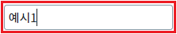
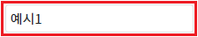
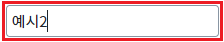
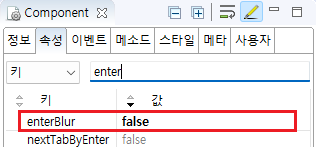

[Input] 'Enter' 키 입력 시 이벤트 'onblur'가 발생하지 않도록 설정하기
1개요
Input의 'enterBlur' 속성을 사용하여 'Enter' 키 입력 시 'onblur' 이벤트를 발생시킬지 여부를 설정한 예제입니다. 'onblur' 이벤트가 발생하면 포커스 역시 아웃됩니다.
속성의 설정 값에 따른 동작은 다음과 같습니다.
"true" : (기본 설정) 포커스가 아웃(입력 커서가 없어짐)되고 'onblur' 이벤트가 발생합니다.
"false" : 별도의 동작을 하지 않습니다. 포커스가 유지됩니다.
2구현된 기능
'enterBlur' 속성의 설정 값을 'true'로 설정
'enterBlur' 속성의 설정 값을 'false'로 설정
3예제 테스트 방법
3.1'enterBlur' 속성의 설정 값을 'true'로 설정
1
STEP 1: Input의 입력 영역에서 'Enter' 키를 입력합니다.
예제 영역 "(기본 설정) 'Enter' 키 입력 시 포커스가 아웃되고 'onblur' 이벤트 발생"의 Input의 입력 영역에서 'Enter' 키를 입력합니다.Image 1.브라우저(Chrome) 실행 예시

2
STEP 2: 실행된 결과를 확인합니다.
Input에서 포커스가 사라지고 'onblur' 이벤트가 발생합니다. '로그 확인'의 Textarea와 브라우저 개발자 도구의 콘솔에 로그가 출력됩니다.
Image 2.브라우저(Chrome) 실행 예시

Example 1.Log
[14:23:12] # onblur 이벤트 발생 - scwin.ibx_exam1_onblur ibx_exam1.getValue(); 반환 값) 예시1
3.2'enterBlur' 속성의 설정 값을 'false'로 설정
1
STEP 1: Input의 입력 영역에서 'Enter' 키를 입력합니다.
예제 영역 "'Enter' 키 입력 시 포커스가 유지되고 'onblur' 이벤트 미발생"의 Input의 입력 영역에서 'Enter' 키를 입력합니다.Image 3.브라우저(Chrome) 실행 예시

2
STEP 2: 실행된 결과를 확인합니다.
Input에서 포커스가 유지되고 'onblur' 이벤트가 발생하지 않습니다.
Image 4.브라우저(Chrome) 실행 예시

4구현 예시
4.1'Enter' 키 입력 시 'onblur' 이벤트가 발생하지 않도록 설정하기
1
Input의 속성을 정의합니다.
[필수] enterBlur="false"
[default: true, false] Enter 키 입력 시 blur 발생 여부
Image 5.웹스퀘어 스튜디오의 Component View - 속성 설정 예시

Example 2.Source
<!-- Input 의 소스 본문 예시 --> <xf:input enterBlur="false"> </xf:input>
5주요 API
enterBlur